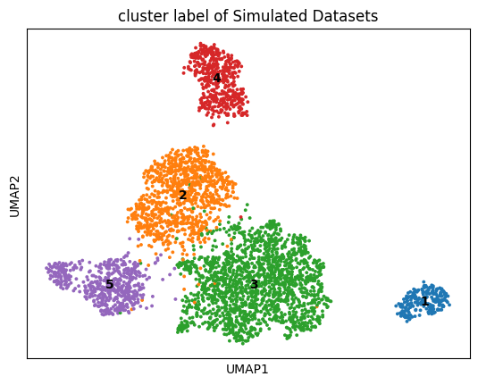
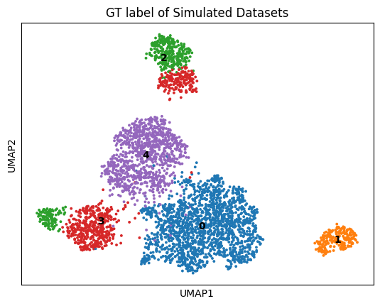
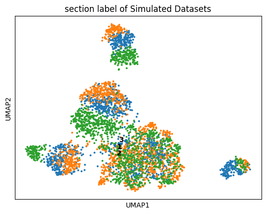

Horizontal integration (Simulation)¶
[ ]:
import os
import torch
import pandas as pd
import scanpy as sc
import numpy as np
import copy
import scipy
import anndata as ad
from SpaMode.preprocess import clr_normalize_each_cell, pca, lsi
from SpaMode.preprocess import construct_neighbor_graph
from SpaMode.Process_BC_list import data_preprocessing, combine_BC, process_spatial_adj, get_feat_adj
from SpaMode.utils import clustering, peak_sets_alignment, gene_sets_alignment
from cal_matrics import eval
from scipy.sparse import coo_matrix
from sklearn.neighbors import kneighbors_graph
from scipy.sparse import csr_matrix
from scipy.sparse import issparse
# Fix random seed
from SME.preprocess import fix_seed
random_seed = 2024
fix_seed(random_seed)
Process batch data
[ ]:
base_path = '/home/hxl/Spa_Multi-omics/Gen_sim/multiome_ZINB_NB_sim_BC/'
file_paths = {
'1': [base_path + '/Slice-1/RNA.h5ad',
base_path + '/Slice-1/Protein.h5ad'],
'2': [base_path + '/Slice-2/RNA.h5ad',
base_path + '/Slice-2/Protein.h5ad'],
'3': [base_path + '/Slice-3/RNA.h5ad',
base_path + '/Slice-3/Protein.h5ad'],
}
# Load all AnnData objects
adata_omics1_list = []
adata_omics2_list = []
for paths in file_paths.values():
adata_omics1, adata_omics2 = [sc.read_h5ad(fp) for fp in paths]
adata_omics1_list.append(adata_omics1)
adata_omics2_list.append(adata_omics2)
# Align gene and peak sets
# adata_omics1_list = gene_sets_alignment(adata_omics1_list)
# adata_omics2_list = peak_sets_alignment(adata_omics2_list)
adata_omics1_norm_list = []
adata_omics2_norm_list = []
for adata1, adata2 in zip(adata_omics1_list, adata_omics2_list):
# Create copies for source data
adata_omics1_src = copy.deepcopy(adata1)
adata_omics2_src = copy.deepcopy(adata2)
# Create copies for normalized data and preprocess
adata_omics1_norm, adata_omics2_norm = data_preprocessing(copy.deepcopy(adata1), copy.deepcopy(adata2))
adata_omics1_norm_list.append(adata_omics1_norm)
adata_omics2_norm_list.append(adata_omics2_norm)
# Combine across batches
src_adata_omics1 = combine_BC(adata_omics1_list)
src_adata_omics2 = combine_BC(adata_omics2_list)
src_adata_omics1_BC, src_adata_omics2_BC = data_preprocessing(src_adata_omics1, src_adata_omics2)
# Construct neighbor graphs for each slice
adata_list = [
construct_neighbor_graph(norm_adata1, norm_adata2, datatype='Sim_L')
for norm_adata1, norm_adata2 in zip(adata_omics1_norm_list, adata_omics2_norm_list)
]
spatial_adj_pd = process_spatial_adj(adata_list)
# Construct neighbor graph for combined data
adata = construct_neighbor_graph(src_adata_omics1_BC, src_adata_omics2_BC, datatype='Sim_L')
adata['adata_omics1'].uns['adj_spatial'] = spatial_adj_pd
adata['adata_omics2'].uns['adj_spatial'] = spatial_adj_pd
# Initialize norm_feat in the combined adata
total_obs = src_adata_omics1_BC.n_obs
adata['adata_omics1'].obsm['norm_feat'] = np.zeros((total_obs, adata_omics1_norm_list[0].obsm['feat'].shape[1]))
adata['adata_omics2'].obsm['norm_feat'] = np.zeros((total_obs, adata_omics2_norm_list[0].obsm['feat'].shape[1]))
# Fill norm_feat with normalized features from each slice
start_idx = 0
for norm_adata1 in adata_omics1_norm_list:
end_idx = start_idx + norm_adata1.n_obs
adata['adata_omics1'].obsm['norm_feat'][start_idx:end_idx] = norm_adata1.obsm['feat']
start_idx = end_idx
start_idx = 0
for norm_adata2 in adata_omics2_norm_list:
end_idx = start_idx + norm_adata2.n_obs
adata['adata_omics2'].obsm['norm_feat'][start_idx:end_idx] = norm_adata2.obsm['feat']
start_idx = end_idx
adata_omics1_adj_feature_Sparse = get_feat_adj(adata_omics1_norm_list)
adata_omics2_adj_feature_Sparse = get_feat_adj(adata_omics2_norm_list)
adata['adata_omics1'].obsm['norm_adj_feature'] = adata_omics1_adj_feature_Sparse
adata['adata_omics2'].obsm['norm_adj_feature'] = adata_omics2_adj_feature_Sparse
# Save processed BC data
adata['adata_omics1'].write_h5ad('./Data/Sim_BC/{}.h5ad'.format('adata_RNA_BE_pca'))
adata['adata_omics2'].write_h5ad('./Data/Sim_BC/{}.h5ad'.format('adata_Protein_BE_pca'))
/home/hxl/anaconda/enter/envs/torch21_py38/lib/python3.8/site-packages/scanpy/preprocessing/_normalization.py:196: UserWarning: Some cells have zero counts
warn(UserWarning('Some cells have zero counts'))
AnnData object with n_obs × n_vars = 1296 × 600
var: 'highly_variable', 'highly_variable_rank', 'means', 'variances', 'variances_norm', 'mean', 'std'
uns: 'modality', 'hvg', 'log1p'
obsm: 'nsfac', 'spatial', 'spfac', 'feat'
varm: 'nsload', 'spload'
layers: 'counts'
AnnData object with n_obs × n_vars = 1296 × 350
var: 'mean', 'std'
uns: 'modality', 'units'
obsm: 'nsfac', 'spatial', 'spfac', 'feat'
varm: 'nsload', 'spload'
layers: 'counts'
/home/hxl/anaconda/enter/envs/torch21_py38/lib/python3.8/site-packages/scanpy/preprocessing/_normalization.py:196: UserWarning: Some cells have zero counts
warn(UserWarning('Some cells have zero counts'))
AnnData object with n_obs × n_vars = 1296 × 600
var: 'highly_variable', 'highly_variable_rank', 'means', 'variances', 'variances_norm', 'mean', 'std'
uns: 'modality', 'hvg', 'log1p'
obsm: 'nsfac', 'spatial', 'spfac', 'feat'
varm: 'nsload', 'spload'
layers: 'counts'
AnnData object with n_obs × n_vars = 1296 × 350
var: 'mean', 'std'
uns: 'modality', 'units'
obsm: 'nsfac', 'spatial', 'spfac', 'feat'
varm: 'nsload', 'spload'
layers: 'counts'
/home/hxl/anaconda/enter/envs/torch21_py38/lib/python3.8/site-packages/scanpy/preprocessing/_normalization.py:196: UserWarning: Some cells have zero counts
warn(UserWarning('Some cells have zero counts'))
AnnData object with n_obs × n_vars = 1296 × 600
var: 'highly_variable', 'highly_variable_rank', 'means', 'variances', 'variances_norm', 'mean', 'std'
uns: 'modality', 'hvg', 'log1p'
obsm: 'nsfac', 'spatial', 'spfac', 'feat'
varm: 'nsload', 'spload'
layers: 'counts'
AnnData object with n_obs × n_vars = 1296 × 350
var: 'mean', 'std'
uns: 'modality', 'units'
obsm: 'nsfac', 'spatial', 'spfac', 'feat'
varm: 'nsload', 'spload'
layers: 'counts'
(1296, 600)
(1296, 600)
(1296, 600)
(1296, 350)
(1296, 350)
(1296, 350)
/home/hxl/anaconda/enter/envs/torch21_py38/lib/python3.8/site-packages/scanpy/preprocessing/_normalization.py:196: UserWarning: Some cells have zero counts
warn(UserWarning('Some cells have zero counts'))
AnnData object with n_obs × n_vars = 3888 × 600
obs: 'Batch'
var: 'highly_variable', 'highly_variable_rank', 'means', 'variances', 'variances_norm', 'mean', 'std'
uns: 'hvg', 'log1p'
obsm: 'spatial', 'feat'
AnnData object with n_obs × n_vars = 3888 × 350
obs: 'Batch'
var: 'mean', 'std'
obsm: 'spatial', 'feat'
Spatial_neighbors = 4
Feature_neighbors = 20
Spatial_neighbors = 4
Feature_neighbors = 20
Spatial_neighbors = 4
Feature_neighbors = 20
Spatial_neighbors = 4
Feature_neighbors = 20
Training Config
[ ]:
device = torch.device('cuda:0' if torch.cuda.is_available() else 'cpu')
file_paths = {
'1': ['/Slice-1/RNA.h5ad',
'/Slice-1/Protein.h5ad',
'/Slice-1/ATAC.h5ad'],
'2': ['/Slice-2/RNA.h5ad',
'/Slice-2/Protein.h5ad',
'/Slice-2/ATAC.h5ad'],
'3': ['/Slice-3/RNA.h5ad',
'/Slice-3/Protein.h5ad',
'/Slice-3/ATAC.h5ad'],
}
adata_omics1 = sc.read_h5ad('/home/hxl/Spa_Multi-omics/0222/Data/Sim_0611/adata_RNA_BE_pca.h5ad')
adata_omics2 = sc.read_h5ad('/home/hxl/Spa_Multi-omics/0222/Data/Sim_0611/adata_Protein_BE_pca.h5ad')
print(adata_omics1)
print(adata_omics2)
adata = {
'adata_omics1': adata_omics1,
'adata_omics2': adata_omics2,
}
AnnData object with n_obs × n_vars = 3888 × 600
obs: 'Batch'
var: 'highly_variable', 'highly_variable_rank', 'means', 'variances', 'variances_norm', 'mean', 'std'
uns: 'adj_spatial', 'hvg', 'log1p'
obsm: 'adj_feature', 'feat', 'norm_adj_feature', 'norm_feat', 'spatial'
AnnData object with n_obs × n_vars = 3888 × 350
obs: 'Batch'
var: 'mean', 'std'
uns: 'adj_spatial'
obsm: 'adj_feature', 'feat', 'norm_adj_feature', 'norm_feat', 'spatial'
Training
[ ]:
import json
# 加载配置文件
with open("config/cfg_Sim.json", "r") as file:
config = json.load(file)
from SME.SpaMode_Multi_0318 import Train_SpaMode
model = Train_Smoe(adata, datatype='MISAR', device=device, Arg=config["ADT"]["Multi"])
output = model.train()
/home/hxl/Spa_Multi-omics/SpaMode/SME/preprocess.py:205: UserWarning: torch.sparse.SparseTensor(indices, values, shape, *, device=) is deprecated. Please use torch.sparse_coo_tensor(indices, values, shape, dtype=, device=). (Triggered internally at ../torch/csrc/utils/tensor_new.cpp:605.)
return torch.sparse.FloatTensor(indices, values, shape)
/home/hxl/Spa_Multi-omics/SpaMode/SME/Svae_Multi_0318.py:309: UserWarning: Implicit dimension choice for softmax has been deprecated. Change the call to include dim=X as an argument.
weight = F.softmax(differ_stack)
optimizer: AdamW
20%|█▉ | 198/1000 [00:11<00:46, 17.09it/s, loss_ori=9.83]
Early Stop
Model training finished!
Umap
[ ]:
def read_list_from_file(path):
list = []
with open(path, 'r') as f:
for line in f:
num = int(line.strip())
list.append(num)
return list
feat_a1 = output['Smoe'][:1296]
feat_a2 = output['Smoe'][1296:2592]
feat_a3 = output['Smoe'][2592:3888]
features = np.vstack([feat_a1, feat_a2, feat_a3])
adata_combined = sc.AnnData(features)
from SME.utils import clustering
adata_combined.obsm['Smoe'] = features
tool = 'mclust' # mclust, leiden, and louvain
clustering(adata_combined, key='Smoe', add_key='Clusters', n_clusters=5, method=tool,
use_pca=True)
labels = adata_combined.obs['Clusters'].tolist()
adata_combined.obs['Clusters'] = np.array(labels).astype(str)
adata_combined.obs['Clusters'] = adata_combined.obs['Clusters'].astype('category')
## Save cluster label
# list = labels
# output_file = _output_path + key + '_cluster.txt'
# with open(output_file, 'w') as f:
# for num in list:
# f.write(f"{num}\n")
labels_a1 = read_list_from_file(base_path + 'Slice-1/GT.txt')
labels_a2 = read_list_from_file(base_path + 'Slice-2/GT.txt')
labels_a3 = read_list_from_file(base_path + 'Slice-3/GT.txt')
labels_a1 = np.array(labels_a1)
labels_a2 = np.array(labels_a2)
labels_a3 = np.array(labels_a3)
labels = np.concatenate([labels_a1, labels_a2, labels_a3])
# # save cluster
# Smoe_df = labels
# list = Smoe_df
# list = [label+1 for label in list]
# output_file = _output_path + key + '_1_2_3.txt'
# with open(output_file, 'w') as f:
# for num in list:
# f.write(f"{num}\n")
labels = np.array(labels)
adata_combined.obs['CLS_Label'] = labels.astype(str)
## Umap
sc.pp.neighbors(adata_combined, n_neighbors=20, use_rep='X')
sc.tl.umap(adata_combined)
sc.pl.umap(adata_combined, color='Clusters', title='cluster label of Simulated Datasets', legend_loc='on data')
sc.pl.umap(adata_combined, color='CLS_Label', title='GT label of Simulated Datasets', legend_loc='on data')
labels_a1 = np.repeat('1', 1296)
labels_a2 = np.repeat('2', 1296)
labels_a3 = np.repeat('3', 1296)
labels = np.concatenate([labels_a1, labels_a2, labels_a3])
adata_combined.obs['BC_Label'] = labels.astype(str)
# 绘制 UMAP 图
sc.pl.umap(adata_combined, color='BC_Label', title='section label of Simulated Datasets', legend_loc='on data')
fitting ...
|======================================================================| 100%
/home/hxl/anaconda/enter/envs/torch21_py38/lib/python3.8/site-packages/scanpy/plotting/_tools/scatterplots.py:394: UserWarning: No data for colormapping provided via 'c'. Parameters 'cmap' will be ignored
cax = scatter(

/home/hxl/anaconda/enter/envs/torch21_py38/lib/python3.8/site-packages/scanpy/plotting/_tools/scatterplots.py:394: UserWarning: No data for colormapping provided via 'c'. Parameters 'cmap' will be ignored
cax = scatter(

/home/hxl/anaconda/enter/envs/torch21_py38/lib/python3.8/site-packages/scanpy/plotting/_tools/scatterplots.py:394: UserWarning: No data for colormapping provided via 'c'. Parameters 'cmap' will be ignored
cax = scatter(
